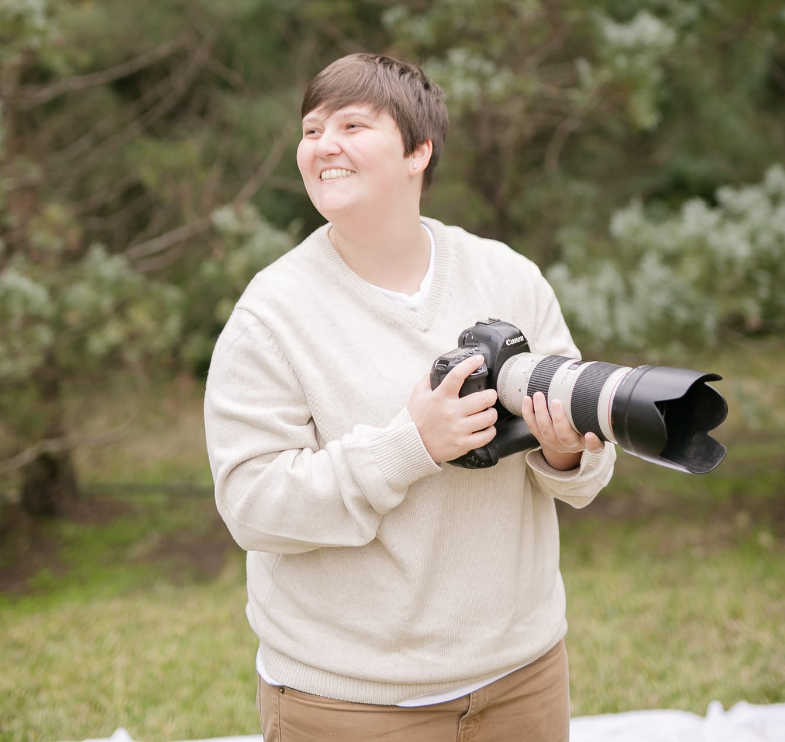

McKenzie Sandefur
Media Specialist

Profile Summary
Versatile Media Specialist with over 4+ years of experience in graphic design, video editing, and production, backed by a BA in Media Production from the University of Houston.
Expert in Final Cut Pro, and Adobe Premiere Pro, with a track record of elevating content for digital audiences. Adept at leveraging SEO to boost digital platform growth and
engagement. Committed to excellence in multimedia storytelling, I bring a blend of creative talent and technical skill to every project.
Education
- Associates of Arts, General Studies - San Jacinto College (2014 - 2016)
- Dean's Honors List (2017)
- Bachelor of Arts, Media Production - University of Houston (2017 - 2020)
Work Experience
- Media Technician
2022 - Present
- Spearheaded the creation and presentation of engaging graphics for weekly
Contemporary Services, enhancing attendee experience through proficient use
of ProPresenter
- Demonstrated versatility by seamlessly transitioning between roles as Audio
Board Operator, Camera Operator, and Production Assistant, ensuring flawless
event execution.
- Facilitated over 50+ events by expertly setting up and dismantling venues,
optimizing event flow and team collaboration in both solo and group settings
- Audio Board Operator
2020 - 2022
- Mastered soundboard operations to deliver premium audio quality for live
broadcasts, enhancing viewer satisfaction and engagement.
- Demonstrated adaptability and teamwork by filling critical roles in Graphics,
Technical Direction, and Replay Board operations, ensuring uninterrupted
broadcast production under staffing constraints
- Proactively identified and resolved audio equipment issues, reducing technical
glitches by 90% and ensuring seamless show operations.
- Graphic Designer
2022 - 2022
- Produced 10+ engaging audiovisual product demos for Amazon and YouTube,
accelerating product understanding and contributing to a 5% increase in sales
conversions
- Elevated the company's YouTube channel visibility by 90% through strategic SEO
enhancements, doubling viewer engagement and driving sales
- Collaborated with the Creative Team to launch 5+ marketing campaigns,
leveraging innovative video graphics that boosted brand awareness and market
share
- Production Assistant
2021 - 2022
- Facilitated 40+ vlog productions by coordinating set-up/break-down, procuring
essentials, and ensuring property maintenance, thereby optimizing production
timelines and efficiency
- Enhanced shoot efficiency by proactively resolving technical and logistical
issues in collaboration with the team, resulting in a 10% decrease in production
delays
- Streamlined prop and costume management for over 40+ shoots using Airtable,
significantly reducing preparation time and ensuring timely set readiness
Skills
- Final Cut Pro: ⭐️⭐️⭐️⭐️
- Video and Audio Production: ⭐️⭐️⭐️⭐️
- Adobe Premiere Pro: ⭐️⭐️⭐️
- HTML 5: ⭐️⭐️
Certifications
- Fiery-830 Fiery Central Workflows
- Fiery-210 Fiery Tools For Job Management
Other